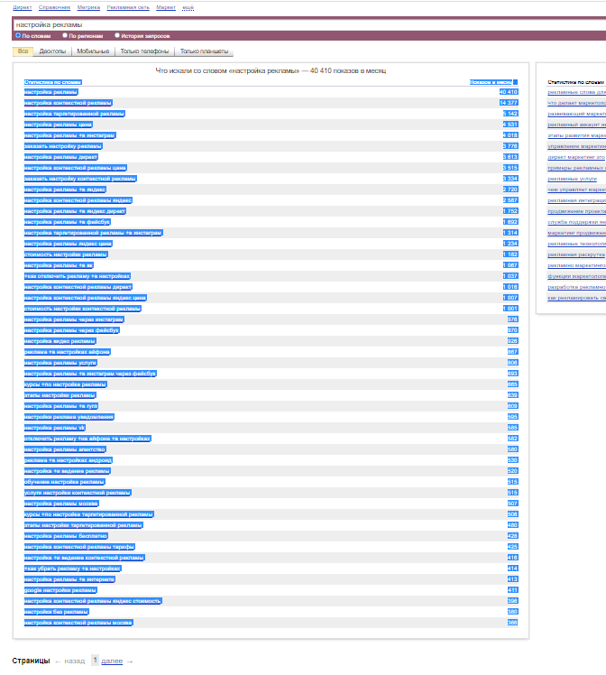

Легкий сервис корректировки строк Яндекс.Вордстат для работы с рекламными кампаниями.

Скопируйте контент из Яндекс.Вордстат как указано на скриншоте, вставьте в форму слева, выберите вариант обработки, нажмите кнопку и скопируйте результат. Все просто :)